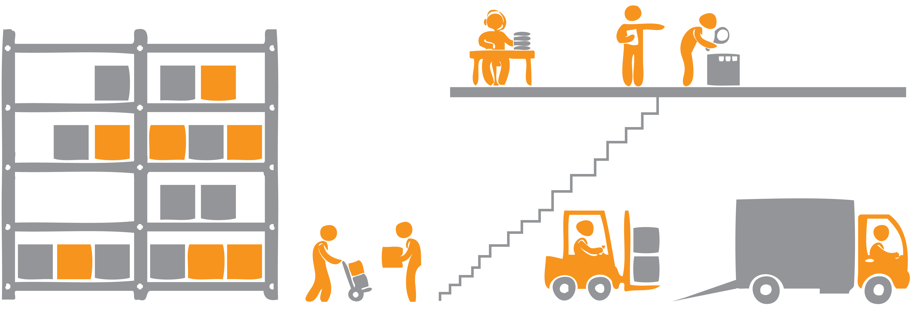

<p-menubar styleClass="sticky top-0 z-5" [model]="items">
    <ng-template pTemplate="start">
            <span class="inline-flex align-items-center gap-1 px-2 py-2">
                
                <span class="font-medium text-4xl font-bold mr-8 ml-4 pr-4">LogistiX</span>
            </span>
    </ng-template>
    <ng-template pTemplate="item" let-item let-root="root">
        <a pRipple class=" p-menuitem-link" [routerLink]="item.routerLink">
            <span [class]="item.icon"></span>
            <span class="ml-2">{{ item.label }}</span>
            <span *ngIf="item.shortcut" class="ml-auto border-1 surface-border border-round surface-100 text-xs p-1">{{ item.shortcut }}</span>
            <i *ngIf="item.items" [ngClass]="['pi', root ? 'pi-angle-down ml-2' : 'pi-angle-right ml-auto']"></i>
        </a>
    </ng-template>
    <ng-template pTemplate="end">
        
    </ng-template>
</p-menubar>
<p-toast/>
